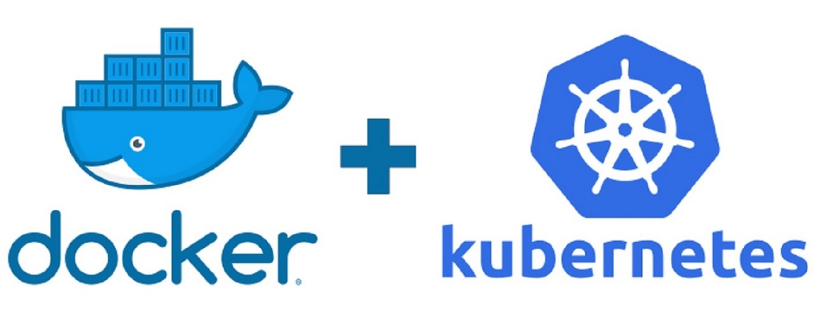

Welcome to Jenkins and Docker and Kubernetes - 22 March 2022

CICD Pipeline Using Git-Hub, Jenkins, Docker and Kubernetes on Google Kubernetes Engine GKE !
CIS Techology Cloud DevOps
Contact Us for More details
Copyrights 2022 http://www.cis-tec.com/